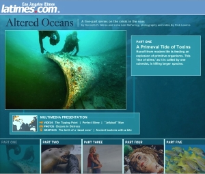

International
Coastal Cleanup, Singapore
International Coastal Cleanup, Singapore

Coordinated by:


International Report Posters Video and Audio Newspaper Articles
 The Ocean Conservancy released the 2009 report,
The Ocean Conservancy released the 2009 report,
"A Rising Tide of Ocean Debris and What We Can Do About It." - link
Click to view and download larger images.

 The Curse of Plastics!
The Curse of Plastics!
 The Curse of Marine Litter
The Curse of Marine Litter
 10 years of mangrove
10 years of mangrove
cleanups in the Johor Straits,
Singapore (1997-2006) The Kranji Mangrove Cleanup 2004 - Link. A video by Wesley Wong. 5 min 40s.
The Kranji Mangrove Cleanup 2004 - Link. A video by Wesley Wong. 5 min 40s.
 News Radio Interview, 2002
News Radio Interview, 2002
Donna Cheng of NewsRadio FM93.8's Living Room chats with Kate Thome (ICCS founder) and Airani S. (Data Manager) about the International Coastal Cleanup Singapore (4th January 2005).
International
 Coastal Cleanup - Link. A video from National Geographic. 2 min 53s. See also "Great Lakes Cleanup" and "Mediterranean Cleanup".
Coastal Cleanup - Link. A video from National Geographic. 2 min 53s. See also "Great Lakes Cleanup" and "Mediterranean Cleanup".
 A Rising Tide of Ocean Debris - Link. A promotional video from the Ocean Conservancy, 2009. 1 min 25s.
A Rising Tide of Ocean Debris - Link. A promotional video from the Ocean Conservancy, 2009. 1 min 25s.
 Start a Sea Change: Join us for an international cleanup! - Link. A promotional video from the Ocean Conservancy, 2008. 0 min 33s
Start a Sea Change: Join us for an international cleanup! - Link. A promotional video from the Ocean Conservancy, 2008. 0 min 33s
 "Battling
the curse of Marine Litter," - link
"Battling
the curse of Marine Litter," - link
by
N. Sivasothi, Nature Watch Vol 10, No. 3 Jul-Sep 2002.
 "International Coastal Cleanup (Mangrove)," - link
"International Coastal Cleanup (Mangrove)," - link
by
N. Sivasothi, Raffles Museum Newsletter No. 2, 15 Apr 2002.
 ICC Singapore News Blog - link to more articles (2007-)
ICC Singapore News Blog - link to more articles (2007-)
 "Here's the dirt on S'pore's beaches," - link
"Here's the dirt on S'pore's beaches," - link
by Radha Basu, The Straits Times, 5th Dec 2005.
Article written after interviews based on the 2005 cleanup.
 "Clean, Green Singapore? Not the beaches," - link
"Clean, Green Singapore? Not the beaches," - link
by Radha Basu, The Straits Times, 22 Oct 2004.
Article written after interviews based on the 2004 cleanup.
 "Say no to plastic bags," - link
"Say no to plastic bags," - link
by Lee U-Wen. Today, 18 Apr 2007.
Article part of a continuing debate; Habitatnews appends related links.
 Litter
in drains could find way to the water supply - PUB chairman - link.
Litter
in drains could find way to the water supply - PUB chairman - link.
The Straits Times, 6th Sep 2002.
News
from Habitatnews |
WildSingapore compilations |
International Resources
- an excellent five part multimedia series on the marine crisis. - alternative link
|
 |
| "Tracking Trash: Flotsam, Jetsam, and the Science of Ocean Motion" (Scientists in the Field) (Hardcover), by Loree Griffin Burns. 64 pages, Houghton Mifflin (March 26, 2007). Ages 9-12. Available at Amazon for USD 12.24. |